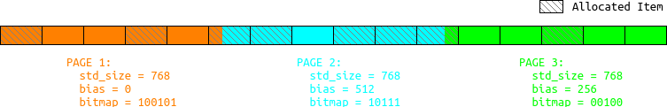

在之前的《libmallocat——让任意内存分配器支持malloc_at()操作》中，我设计了一种基于AVL树“遮罩”的libmallocat，能够让任意的内存分配器都支持malloc_at()操作。但是看了其原理也就知道，该方法的效率很糟糕。只有在没有任何其他办法时，才可以“死马当活马医”。
这之后我思考了很多，一直在想如何探究jemalloc的分配规律，利用其规律来实现malloc_at()操作。我最最原始的发现是这样的：
- 对于同样的malloc/free序列，两个进程中jemalloc分配的地址（当然，是指偏移量）完全是一样的。换言之，jemalloc的算法不存在随机性。
于是我想到了最最原始的方案：
- 把进程运行过程中的的malloc/free序列完整地记录下来，下次启动时，按照上次的malloc/free序列重新分配、释放内存，那么最后保留下来的就是进程上次退出时还在使用的那些内存块。
但是，这样的方案有一个非常致命的问题：这个malloc/free序列会非常地长，而且越来越长。我也考虑过有没有什么算法可以压缩这个malloc/free序列，比如把配对的malloc和free删除。无果。我一直有一个终极幻想：对于用户给定所有最终需要malloc_at()的内存区域，某个算法可以构造出一个malloc/free序列，使得该序列的最终执行结果恰好满足要求。
直到了我在前三篇博客《libmemkind探究（一）——让jemalloc管理指定的空间》、《libmemkind探究（二）——jemalloc的内存分配规律以及size_classes_sh的修改》和《libmemkind探究（三）——MALLOCX_TCACHE_NONE对于jemalloc分配规律的影响》中的规律被我发现后，我才终于意识到，我貌似有想法了！这一切，也就发生在三天内。
首先引用《libmemkind探究（三）——MALLOCX_TCACHE_NONE对于jemalloc分配规律的影响》中最后总结的四条规律：
- 第[512 * n, 512 * n + 13)页都是跳过的；
- 用户传入的大小，会被“标准化”到一个档位，称为标准化大小；
- 一个页只会分配某一种标准化大小的small对象，而且这些small对象紧凑排布，向后递增；
- 标准化大小为std_size的small对象占用n页，4096 * n是4096与std_size的最小公倍数。
显然，jemalloc是按照页来分配small对象的。那么我就把整个要管理的NVM空间，看作多个连续的页。比如用户需要我管理1G的空间，那么我就知道其中有1G / 4096 = 262144个页。每一个页使用一个struct page来描述，那么也就是动态创建一个元素个数为262144的struct page数组。
/* 一个页的信息 */
struct page
{
uint32_t std_size; /* 该页用于分配的单元大小 */
uint32_t bias; /* 该页第一个可分配单元距页首的偏移量 */
union /* bitmap，用于标记哪些单元已分配 */
{
uint8_t* bitmap; /* 如果该页可分配单元超过64个，使用动态分配的字节数组作为bitmap */
uint64_t bitmap64; /* 如果该页可分配单元不超过64个，则使用该64位整数作为bitmap */
};
};
以上就是一个页的描述信息。由规律3可知，一个页只可能存放同一标准化大小的单元，这用字段std_size描述。由于某些std_size并不能整除页大小，如果不是该存放该std_size的第一个页，那么很可能该页中的第一个单元并不是位于该页的首地址上。页内第一个单元距离页首的偏移量使用bias描述。除此之外，页内并不是每一个单元都被分配了，因此使用一个bitmap来描述各个单元的分配状态（0为未分配，1为已分配）。本来是直接使用一个指针来指向一个动态分配的bitmap的，但是考虑到，一个页大小是4096,只要单元大小超过64，该页中单元个数就不会超过64，那么可以直接使用一个uint64_t来作为bitmap。std_size和bias使用uint32_t也是出于节约内存的考虑（而且完全够用了）。如下图展示了std_size = 768时的情景：

只要（只有）单元的首地址落在某个页内，那么该页就负责描述该单元（在bitmap中）。这种连续多页的情况是由规律4决定的。
每当用户通过某个函数告诉我一个需要malloc_at(offset, size)的区域时，算法逻辑如下：
- 将size转换为标准化大小std_size；
- 计算该区域所在的页编号page_id = offset / 4096;
- 计算该单元在页内的偏移量offset_in_page = offset - page_id * 4096;
- 计算该单元在页内的单元编号item_index = offset_in_page / std_size;
- 计算该页的偏置bias = offset_in_page - item_index * std_size;
- 获取该页struct page* page = pages + page_id（其中pages为初始化时创建的struct page数组）;
- 如果page->std_size != 0（已被分配过）：
- 把page->bitmap第item_index置为1；
- page->std_size = std_size;
- page->bias = bias;
- 把page->bitmap第item_index置为1；
- 当前页偏置为current_bias = bias;
- 如果current_bias == 0（是第一个页），跳到K；
- 计算前一个页的偏置prev_bias = (current_bias + 4096) % std_size;
- 把前一个页的std_size设置为std_size;
- 把前一个页的bias设置为prev_bias;
- 令current_bias = prev_bias;
- 跳到E（步骤D到J称为“向前探路”）；
- 当前页余量为current_rest = (4096 - bias) % std_size;
- 如果current_rest == 0（是最后一个页），跳到S；
- 计算后一个页的余量next_rest = (current_rest + 4096) % std_size;
- 计算后一个页的偏置next_bias = next_rest <= 4096 ? (4096 - next_rest) % std_size : std_size + 4096 - next_rest;
- 把后一个页的std_size设置为std_size;
- 把后一个页的bias设置为next_bias;
- 令current_bias = next_bias;
- 跳到L（步骤K到R称为“向后探路”）；
- 结束；
对于每一个内存区域，都执行上述算法。那么当所有内存区域都迭代完之后，pages数组就完全记录了所有页的分配情况。之后，我开始从第一个页开始查看：
- 如果是不能分配的页（根据规则1)，直接跳过;
- 如果是没被分配的页（std_size == 0），那么就分配一次4096的对象，填满它；
- 如果是已被分配的页（std_size != 0），那么把这个页中所有单元都分配了（不管bitmap），填满它；
“填满”动作完成之后，再遍历一遍所有的页：
- 如果是不能分配的页（根据规则1)，直接跳过;
- 如果是没被分配的页（std_size == 0），那么就把该位置的一个4096的内存释放；
- 如果是已被分配的页（std_size != 0），那么把这个页中所有bit = 0的单元都释放；
如此先“填满”，再“扣洞”，就实现了malloc_at()，哈哈哈！
jemallocat.h
#ifndef JEMALLOCAT_H
#define JEMALLOCAT_H
#include <stdint.h>
/* 一个页的信息 */
struct page
{
uint32_t std_size; /* 该页用于分配的单元大小 */
uint32_t bias; /* 该页第一个可分配单元距页首的偏移量 */
union /* bitmap，用于标记哪些单元已分配 */
{
uint8_t* bitmap; /* 如果该页可分配单元超过64个，使用动态分配的字节数组作为bitmap */
uint64_t bitmap64; /* 如果该页可分配单元不超过64个，则使用该64位整数作为bitmap */
};
};
/* jemalloc对象 */
struct jemallocat
{
struct page* pages; /* 页数组，描述了jemalloc管理的空间的分配信息 */
size_t page_count; /* 页数量 */
size_t page_size; /* 页大小 */
size_t max_small_size; /* 最大的small size（参加jemalloc的尺度划分），只有small size用bin管理 */
void* udata; /* 私有数据（通常为用户的分配器） */
void* (*base_addr)(void* udata); /* 分配器中，获取基地址的函数 */
void* (*malloc)(void* udata, size_t size); /* 分配器中，分配内存的函数 */
void (*free)(void* udata, void* ptr); /* 分配器中，释放内存的函数 */
size_t (*standardize_size)(void* udata, size_t size); /* 分配器中，标准化传给malloc()的size的函数 */
int (*is_page_allocatable)(void* udata, size_t index); /* 分配器中，判断页是否可分配的函数 */
size_t highest_used_page; /* 使用到的最后一个页 */
};
/*
jemallocat初始化函数
jemallocat: jemallocat对象
total_size: 分配器管理的空间的大小
page_size: 页的大小
max_small_size: 最大的small size（参加jemalloc的尺度划分）
udata: 私有数据
base_addr: 分配器中，获取基地址的函数
malloc: 分配器中，分配内存的函数（务必确保je_mallocx()带有MALLOCX_TCACHE_NONE标记）
free: 分配器中，释放内存的函数
standardize_size: 分配器中，标准化传给malloc()的size的函数
is_page_allocatable: 分配器中，判断页是否可分配的函数
成功返回1，失败返回0
*/
int jemallocat_init(struct jemallocat* jemallocat,
size_t total_size,
size_t page_size,
size_t max_small_size,
void* udata,
void* (*base_addr)(void* udata),
void* (*malloc)(void* udata, size_t size),
void (*free)(void* udata, void* ptr),
size_t (*standardize_size)(void* udata, size_t size),
int (*is_page_allocatable)(void* udata, size_t index));
/*
向jemallocat添加一个已被占用的区域
jemallocat: jemallocat对象
offset: 偏移量
size: 区域大小
成功返回1,失败返回0
*/
int jemallocat_add(struct jemallocat* jemallocat, size_t offset, size_t size);
/*
告知jemallocat，已经添加完所有区域，开始执行malloc_at()操作
jemallocat: jemallocat对象
成功返回1,失败返回0
*/
int jemallocat_finish(struct jemallocat* jemallocat);
#endif
jemallocat.c
#include <stdlib.h>
#include "common.h"
#include "jemallocat.h"
#define DIV_CEIL(a, b) (((a) - 1) / (b) + 1)
int jemallocat_init(struct jemallocat* jemallocat,
size_t total_size,
size_t page_size,
size_t max_small_size,
void* udata,
void* (*base_addr)(void* udata),
void* (*malloc)(void* udata, size_t size),
void (*free)(void* udata, void* ptr),
size_t (*standardize_size)(void* udata, size_t size),
int (*is_page_allocatable)(void* udata, size_t index))
{
assert(jemallocat);
assert(total_size);
assert(page_size);
assert(max_small_size);
assert(base_addr);
assert(malloc);
assert(free);
assert(standardize_size);
assert(is_page_allocatable);
size_t page_count = DIV_CEIL(total_size, page_size);
struct page* pages = calloc(page_count, sizeof(struct page));
if(!pages)
ERROR(0, 1, "calloc(%lu, sizeof(struct page)) failed", page_count);
jemallocat->pages = pages;
jemallocat->page_count = page_count;
jemallocat->page_size = page_size;
jemallocat->max_small_size = max_small_size;
jemallocat->udata = udata;
jemallocat->base_addr = base_addr;
jemallocat->malloc = malloc;
jemallocat->free = free;
jemallocat->standardize_size = standardize_size;
jemallocat->is_page_allocatable = is_page_allocatable;
jemallocat->highest_used_page = 0;
return 1;
}
/*
计算一个页包含多少个单元（即bitmap的长度）
该个数是指，有多少个单元的首地址在该页内（最后一个单元可能跨页）
*/
static size_t get_item_count(struct page* page, size_t page_size)
{
assert(page);
assert(page->std_size);
if(page->bias < page_size)
return DIV_CEIL(page_size - page->bias, page->std_size);
else
return 0;
}
/*
在一个页中,将指定的bit置为1
*/
static int set_page_bitmap(struct page* page, size_t page_size, size_t item_index)
{
size_t item_count = get_item_count(page, page_size);
if(item_index >= item_count)
ERROR(0, 0, "item_index = %lu is out of range", item_index);
if(item_count <= 64)
{
if((page->bitmap64 >> item_index) & 1)
ERROR(0, 0, "this bit is not 0");
page->bitmap64 |= (size_t)1 << item_index;
}
else
{
if(!page->bitmap)
{
size_t byte_count = DIV_CEIL(item_count, 8);
if(!(page->bitmap = calloc(byte_count, 1)))
ERROR(0, 0, "calloc(%lu, 1) failed", byte_count);
}
size_t byte_index = item_index / 8;
size_t bit_index = item_index % 8;
if((page->bitmap[byte_index] >> bit_index) & 1)
ERROR(0, 0, "this bit is not 0");
page->bitmap[byte_index] |= 1 << bit_index;
}
return 1;
}
int jemallocat_add(struct jemallocat* jemallocat, size_t offset, size_t size)
{
assert(jemallocat);
/* 得到标准化的size */
size_t std_size = jemallocat->standardize_size(jemallocat->udata, size);
if(std_size < size)
ERROR(0, 0, "jemallocat->standardize_size(udata, %lu) = %lu is wrong", size, std_size);
if(std_size > jemallocat->max_small_size)
ERROR(0, 0, "std_size = %lu is greater than max_small_size = %lu",
std_size, jemallocat->max_small_size);
/* 该单元所在页号 */
size_t page_id = offset / jemallocat->page_size;
if(page_id >= jemallocat->page_count)
ERROR(0, 0, "offset = %lu is out of range", offset);
/* 页内偏移 */
size_t offset_in_page = offset - page_id * jemallocat->page_size;
/* 页内单元序号 */
size_t item_index = offset_in_page / std_size;
/* 该页中第一个单元相对于页首的偏移 */
size_t bias = offset_in_page - item_index * std_size;
struct page* page = jemallocat->pages + page_id;
/* 若该页已被用于分配，检查std_size与bias是否相符，然后设置对应的bit */
if(page->std_size)
{
if(page->std_size != std_size)
ERROR(0, 0, "this page(page_id = %lu) is for size = %u", page_id, page->std_size);
if(page->bias != bias)
ERROR(0, 0, "the bias of this page(page_id = %lu) is %u", page_id, page->bias);
if(!set_page_bitmap(page, jemallocat->page_size, item_index))
ERROR(0, 0, "this allocation(offset = %lu, size = %lu) is impossible", offset, size);
}
/* 若是空闲页，则初始化该页，设置对应的bit，并且前推、后推以探明该bin */
else
{
page->std_size = std_size;
page->bias = bias;
if(!set_page_bitmap(page, jemallocat->page_size, item_index))
ERROR(0, 0, "this allocation(offset = %lu, size = %lu) is impossible", offset, size);
/* 以下，前推所有用于分配该std_size的页 */
struct page* current_page = page;
/* 当前页的偏置 */
size_t current_bias = bias;
/* 只要偏置不为0,就说明当前页不是该bin的第一个页 */
while(current_bias)
{
/* 当前页不可能是全局第一个页 */
if(current_page == jemallocat->pages + 0)
ERROR(0, 0, "this allocation(offset = %lu, size = %lu) is impossible", offset, size);
/* 计算前一个页的偏置 */
size_t prev_bias = (current_bias + jemallocat->page_size) % std_size;
struct page* prev_page = current_page - 1;
/* 既然要前推、后推，那么该bin必然从未被碰触过，因此前一个页一定是空闲页 */
assert(!prev_page->std_size);
prev_page->std_size = std_size;
prev_page->bias = prev_bias;
current_page = prev_page;
current_bias = prev_bias;
}
/* 以下，后推所有用于分配该std_size的页 */
current_page = page;
/* 当前页的余量 */
size_t current_rest = (jemallocat->page_size - bias) % std_size;
/* 只要偏置不为0,就说明当前页不是该bin的最后一个页 */
while(current_rest)
{
/* 当前页不可能是全局最后一个页 */
if(current_page == jemallocat->pages + jemallocat->page_count - 1)
ERROR(0, 0, "this allocation(offset = %lu, size = %lu) is impossible", offset, size);
/* 计算下一个页的余量 */
size_t next_rest = (current_rest + jemallocat->page_size) % std_size;
/* 计算下一个页的偏置 */
size_t next_bias = next_rest <= jemallocat->page_size ?
(jemallocat->page_size - next_rest) % std_size :
std_size + jemallocat->page_size - next_rest;
struct page* next_page = current_page + 1;
/* 既然要前推、后推，那么该bin必然从未被碰触过，因此后一个页一定是空闲页 */
assert(!next_page->std_size);
next_page->std_size = std_size;
next_page->bias = next_bias;
current_page = next_page;
current_rest = next_rest;
}
}
if(page_id > jemallocat->highest_used_page)
jemallocat->highest_used_page = page_id;
return 1;
}
/* 获取指定页中指定的bit */
static int get_page_bitmap(struct page* page, size_t item_count, size_t item_index)
{
assert(item_index < item_count);
if(item_count <= 64)
return (page->bitmap64 >> item_index) & 1;
else
{
if(!page->bitmap)
return 0;
assert(page->bitmap);
size_t byte_index = item_index / 8;
size_t bit_index = item_index % 8;
return (page->bitmap[byte_index] >> bit_index) & 1;
}
}
int jemallocat_finish(struct jemallocat* jemallocat)
{
assert(jemallocat);
void* base_addr = jemallocat->base_addr(jemallocat->udata);
if(!base_addr)
ERROR(0, 0, "jemallocat->base_addr(udata) = 0 is wrong");
/* 遍历所有页，填满所有可分配对象 */
for(size_t page_id = 0; page_id <= jemallocat->highest_used_page; page_id++)
{
struct page* page = jemallocat->pages + page_id;
/* 跳过不可分配的页 */
if(!jemallocat->is_page_allocatable(jemallocat->udata, page_id))
{
if(page->std_size)
ERROR(0, 0, "jemallocat->is_page_allocatable(udata, %lu) "
"says page %lu is not allocatable, but this page has been allocated"
"for std_size = %u", page_id, page_id, page->std_size);
/* 使不可分配的页不参与malloc()，见下方代码逻辑 */
page->bias = jemallocat->page_size;
continue;
}
/* 这里被过滤掉的，有：1、整页都被某个大对象占用；2、上面的不可分配页 */
if(page->bias >= jemallocat->page_size)
continue;
/* 如果是空闲页，那么则用于分配一个大小刚好为一页的对象 */
if(!page->std_size)
{
page->std_size = jemallocat->page_size;
assert(!page->bias);
}
/* 所有单元的全局基础偏移量 */
size_t item_base_offset = page_id * jemallocat->page_size + page->bias;
/* 该页可分配的对象个数 */
size_t item_count = get_item_count(page, jemallocat->page_size);
for(size_t item_index = 0; item_index < item_count; item_index++)
{
/* 依次分配 */
void* ptr = jemallocat->malloc(jemallocat->udata, page->std_size);
if(!ptr)
ERROR(0, 0, "jemallocat->malloc(udata, %u) failed", page->std_size);
assert(ptr >= base_addr);
/* 计算偏移量 */
size_t offset = (char*)ptr - (char*)base_addr;
/* 计算“理应的”偏移量 */
size_t expect_offset = item_base_offset + item_index * page->std_size;
if(offset != expect_offset)
ERROR(0, 0, "jemallocat->malloc(udata, %u) is at offset = %lu, instead of %lu",
page->std_size, offset, expect_offset);
}
}
/* 遍历所有页，释放所有不需要的对象 */
for(size_t page_id = 0; page_id <= jemallocat->highest_used_page; page_id++)
{
struct page* page = jemallocat->pages + page_id;
/* 这里被过滤掉的，有：1、整页都被某个大对象占用；2、上面的不可分配页 */
if(page->bias >= jemallocat->page_size)
continue;
assert(page->std_size);
/* 所有单元的全局基础偏移量 */
size_t item_base_offset = page_id * jemallocat->page_size + page->bias;
/* 该页可分配的对象个数 */
size_t item_count = get_item_count(page, jemallocat->page_size);
for(size_t item_index = 0; item_index < item_count; item_index++)
{
/* 如果该对象不需要，则释放之 */
if(!get_page_bitmap(page, item_count, item_index))
{
size_t offset = item_base_offset + item_index * page->std_size;
void* ptr = (char*)base_addr + offset;
jemallocat->free(jemallocat->udata, ptr);
}
}
/* 如果bitmap是动态分配的，释放之 */
if(item_count > 64 && page->bitmap)
free(page->bitmap);
}
free(jemallocat->pages);
return 1;
}